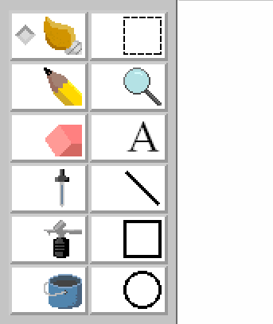
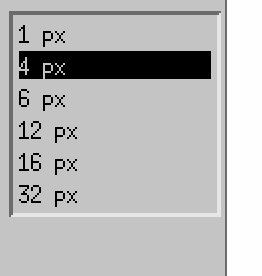

Synopsis
classic-colors [file]
Discription
Classic-Colors is a simple raster image editor writen in the motif toolkit, It supports the file formats of:
The main interface as shown:

Of the visible widgets, they will be discussed top to down, starting with the menubar:

-
File Standard file options
-
Edit Standard edit options
-
View
-
Zoom in + [zoom in the file]
-
Zoom Out - [zoom out of the file]
-
Reset [reset shown file to oringal size]
-
Image
Image alteration operations:
-
Flip [flip image]
-
Stretch [stretch image]
-
Invert [invert Image]
-
Attributes [alter attributes of the image]
-
Clear [clear the current image to a blank]
-
Help
Help
Bring up the HTML help page for Classic-Colors
About
Bring up the about Classic-Colors window.
The 12 buttons below are:

in order of left to right:
-
Brush
Draws a circlular brush without interuption, options are sizes mesured in pixels
-
Select(dashed square)
Select area, options are:
-
ignore bg
ingore background
-
everything
grab everything
-
Pencil
Draws a square brush without interuption, same mouse options as brush
-
Zoom(maginfying glass)
Use a zoom operation on the image
-
Erase(eraser)
Inverse of brush
-
Text(A)
Draw text, options are
- Text type
- Text size
- Text allighment
-
Sample(dropper)
Samples the color of the selected area
-
Line
Draw a line, options are size
-
Spray
Deposit visual noise constrained in a circle, options are size
-
Square draw
Draw a square, options are:
- Stroke
- Fill
- Stroke + Fill
-
Fill(bucket)
Fill selected area, options are:
-
Oval draw
Draw a oval, options are same as square draw
below that is a context sensitive list of options relating to the selected tool above:

Farthest below is the color selection and status message:

Source
https://github.com/justinmeiners/classic-colors
See also
Pinta
Microsoft paint
My Paint
KolourPaint
MtPaint
Bugs
Upon any changes, classic-colors will not state in any way it has unsaved data
non-animated gif only supported
.xpm not supported
|